- What You'll Need
- Part 1
- Part 2
- Part 3
A blanket fort is fun to play in and easy to build. You can use a bunk bed, dining table, chairs, a flipped-over couch, a windowsill, or other household items. Put blankets over all of the open areas that let light in, or just simply put in a lamp, and bring a flashlight or other safe light source in with you. Tell scary stories with friends late at night (or during the day if the blankets block enough light). You can even have a sleepover in it. Block extra holes by stuffing cushions, pillows, or crumpled-up blankets in the cracks, but make sure that they can hold up nice and strong. To make it even more fun, try bringing an ipad, a phone, or a tablet in with you. Be safe and have fun in your fort!
Things You'll Need
- Chairs/bed, dresser, couch, or table.
Large sheets or blankets.
- Safety Pins or clothespins.
- Heavy books or objects.
- Pillows or cushions.
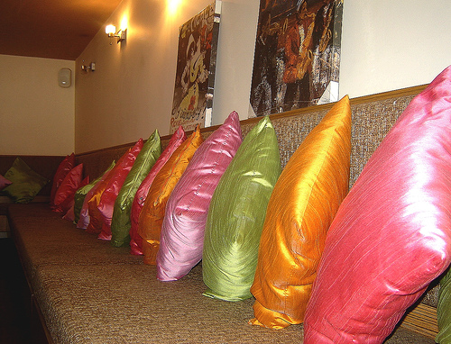
- Large area to build fort.
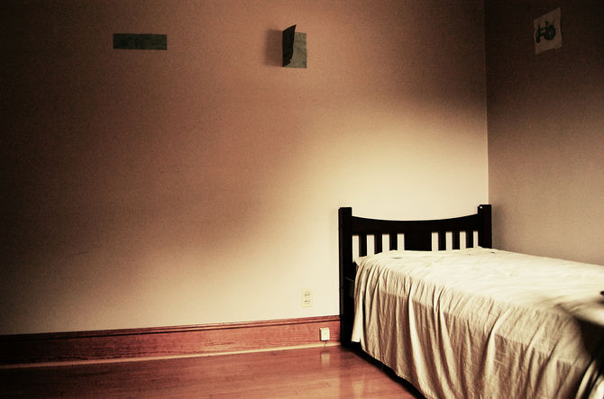
- A clean space to build fort
Part One
- Be sure you have appropriate supplies before you begin. A blanket fort typically uses blankets, but that is just a jumping-off point; most homes will be full of possible materials.
- Besides blankets, try: Pillows, sheets, baskets (to make an entrance) towels, or even a play mat to put on top of baskets.
- Blanket forts will need structural support. Typically this will come from chairs (such as dining room chairs), or other furniture (such as couches).
- Large sections of cardboard or extra-big boxes (such as appliance or moving boxes) can be super-useful to help strengthen the structure and create other rooms.
- Also consider some safety pins (or clothespins for younger children) to pin the sheets together to form a tent-flap style door.
- Choose an area that is out of the way of household traffic. Do not put it in the middle of a busy hallway, or in the kitchen.
- Classic locations include living room, bedrooms, under dining room tables or furnished basements.
- Choose items carefully - ask for permission if unsure. Do not use items that somebody in the house might need to use before your fort is taken down. Your sister will not appreciate you using her bed sheets when she is headed to sleep for the night, or your mother's computer chair when she needs to use e-mail.
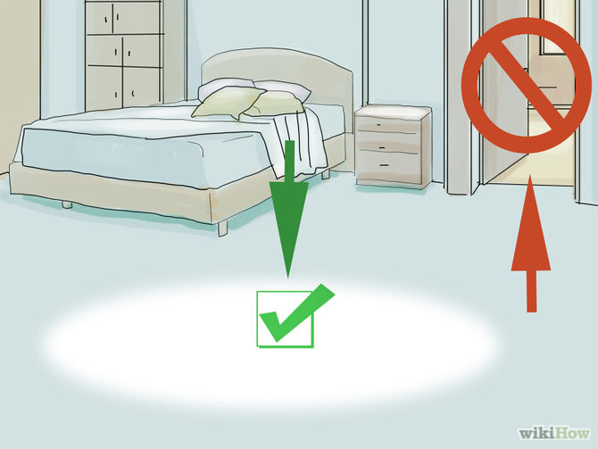
Part Two
- Engineer your blanket fort. There are countless ways to construct your "fort", and much of the enjoyment comes from the challenge of using your materials to suit the environment.
- Be flexible: problem-solving takes trial and error. If the blanket falls down means you have to change something.
- If you are part of a team, listen to your partners.
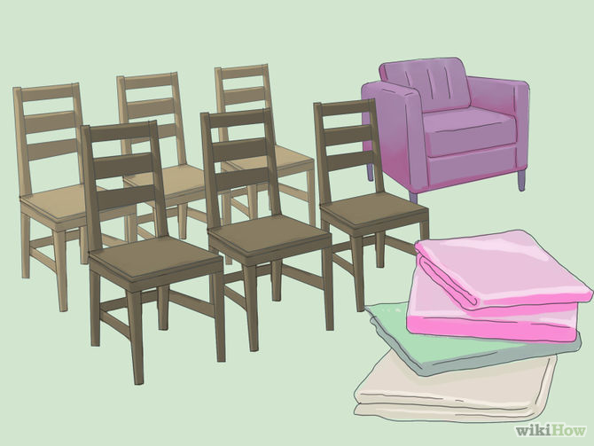
Part Three
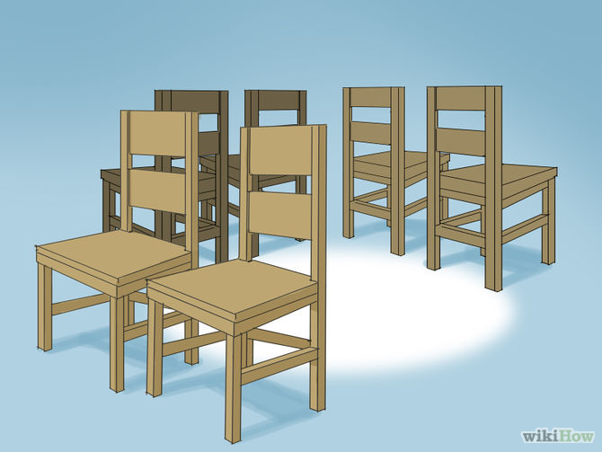
- Try using safety pins, elastics, pegs or paper clip clamps (the larger the better!) to connect sheets and blankets together to keep the sheets from falling down. You can use draws to hook blankets in. Using rubber bands to tie blankets to chairs is also a good way to keep them suspended where you want them.
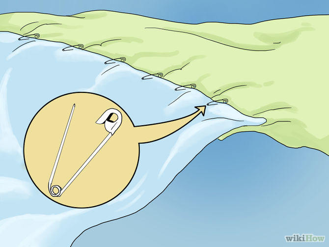
- Try to drape the sheets and blankets over the top of the chairs. Don't put the blankets on the edge of chairs or they'll fall out. Use rubber bands or clothespins to keep the blankets on, if you need to. If it looks good enough, keep it as is.
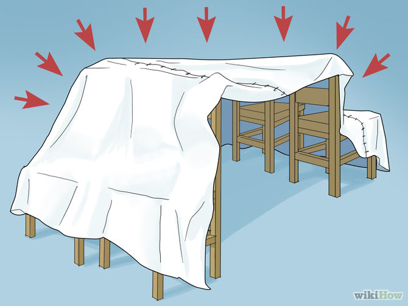
- Create a door, if you desire.It is nice to have a door that you can shut out the rest of the world. It will also allow you to get in and out easily, without having to take it apart.
- Or leave an opening on the side of your fort for a door. If there is no room to leave an opening, you may have to make space for a door.
- Leave an opening at the front and back of your fort for an entrance and an exit.
- Or do not worry about a door. It is a blanket fort which means all you have to do is gently push aside fabric to enter or exit.
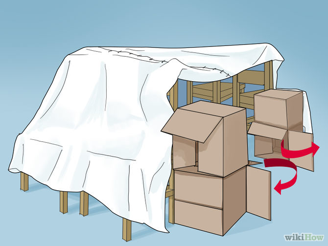
- Try placing books or heavy objects along the edges of the sheets and blankets to hold them in place so they won't tilt and fall. Do not use anything heavier than you want to fall on your body. Also, nothing breakable or valuable.
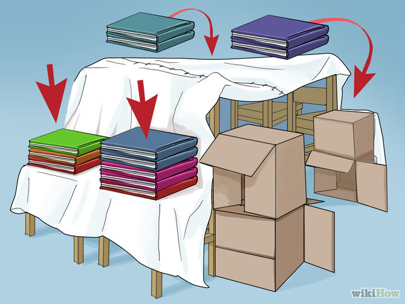
- Add a blanket and a few pillows inside to sit on. Grab a DVD player, an MP3 player, or anything fun to do and enjoy while enjoying the comfort of your fort.
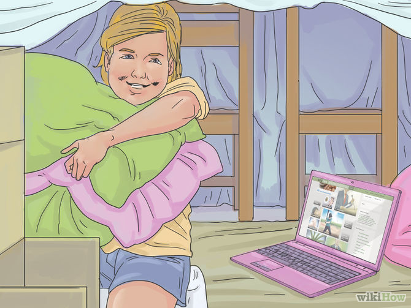
- Invite a friend to join you if your fort is large enough.Grab a few snacks and play a game. Have a sleepover. Use flashlights.
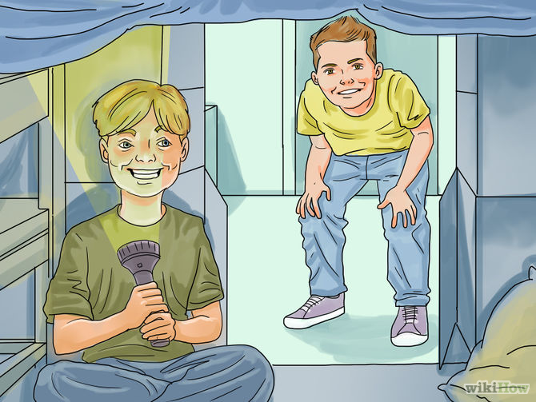
- Make your fort as simple or elaborate as you like.Build a few different rooms, if you want. Furnish your fort. You can use kid-sized furniture if you have it or improvise with pillows and cardboard boxes.
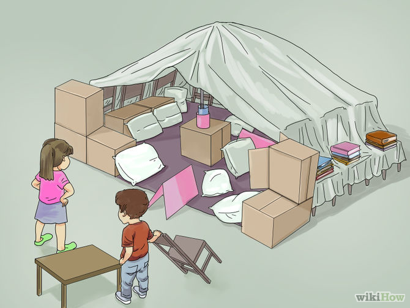
- Find an epic name for your fort (e.g "Mount Olympus")
- Grab a snack to eat inside your fort.You never know how long you'll stay in there.
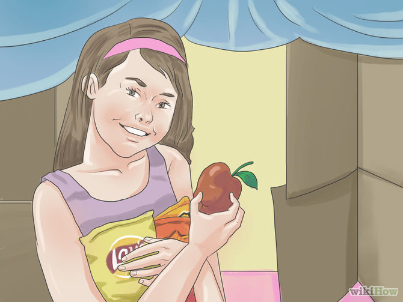
Back to Top